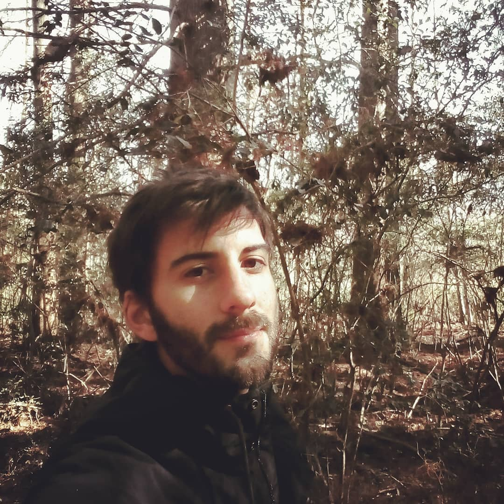
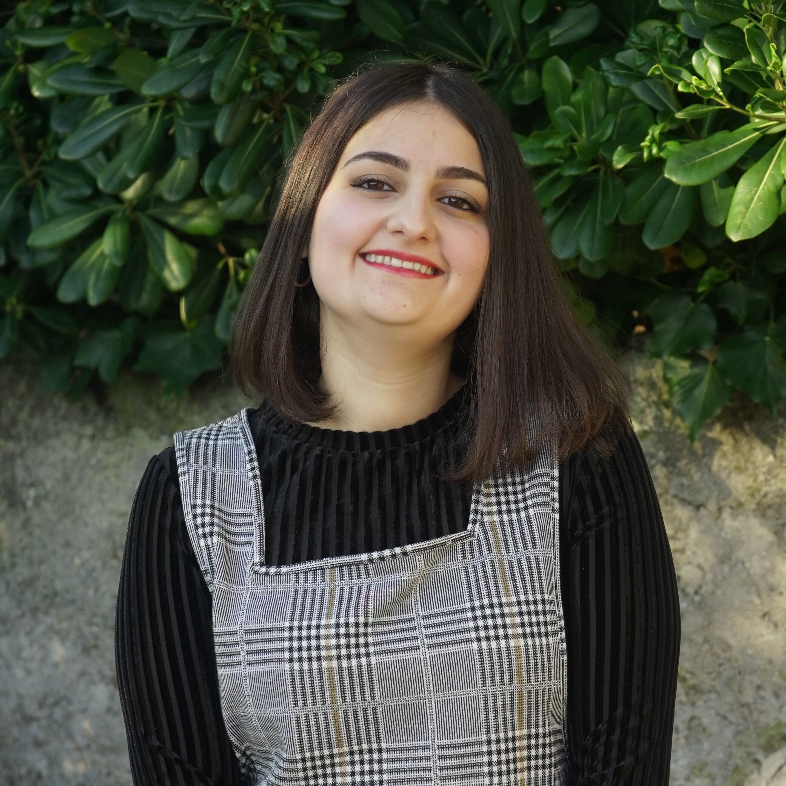

Welcome to the Population Genomics Laboratory of the Institute of Genetics and Biophysics of the National Research Council. We are interested in understanding causes and consequences of genetic diversity and how natural selection in humans affects loci related to diseases.
Fascinating (Lieutenant Spock)
Research
Genomics of early embryonic development
How natural selection acts on early human development
We investigate adverse outcomes of embryonic development like recurrent pregnancy loss and preeclampsia to identify the genetic factors that influence reproductive outcomes and pregnancy complications. This knowledge furthers our understanding of human evolution and informs efforts to improve pregnancy outcomes.
In CABERNET we aim to determine the extent of chromosomal mosaicism between embryonic and extraembryonic tissues using single cell DNA sequencing.
In DELIVER / NEONATE we want to identify genetic factors contributing to reproductive failure and recurrent miscarriage. We will use single cell strand sequencing to map balanced rearrangements and whole genome sequencing of euploid miscarried embryos to identify causative variants.
In CANDLE we want to uncover gene expression patterns associated with APOL1 risk alleles and preeclampsia in African American women. We will examine the role of ancestry in mediating the relationship between APOL1 genotype and preeclampsia risk. The results can provide insights into genetic and molecular basis of preeclampsia.
-
Francesca Antonacci University of Bari Aldo Moro
-
Carlo Alviggi, University of Naples Federico II
-
Antonio Lamarca, University of Modena and Reggio Emilia
-
Marcella Vacca, National Research Council
-
Gabriella Lania, National Research Council
-
Imma and Sebastiano Di Biase, MeriGen Research, Italy
-
Antonio Capalbo, Juno Genomics
-
Michele Rubini University of Ferrara
-
Qasim Ayub, Monash University, Malaysia
Funding
-
PRIN 2020J84FAM Ministero dell’Universita e della Ricerca
-
PRIN 2022WEHP7M Ministero dell’Universita e della Ricerca
-
PRIN P2022ZE75A Ministero dell’Universita e della Ricerca
-
POR Campania FSE 2014-2020 ASSE III – Ob. Sp. 14
Admixture Mapping and Pangenomics Analysis in the Biorepository and Integrative Genomics (BIG) Initiative Cohort
Improving Phenotype-Genotype Linkages through Ancestry Patterns
The BIG initiative is currently recruiting 30k participants from Memphis (TN), mostly children, with plans to include a total of 100,000 samples over the next five years. Nearly 45% of current participants are of African ancestry, and the cohort is partnering with the Genomic Information Commons, a consortium of top children’s hospitals, to conduct genomics research aimed at discovering the genetic foundations of human disease in diverse populations.
We want to understand the extent and origin of admixture patterns in the Biorepository and Integrative Genomics (BIG) Initiative cohort and to develop pipelines for admixture mapping of phenotypic traits related to diseases and natural selection phenotypes.
We are using existing exome sequence data and electronic health records from 10k children to obtain an improved set of genetic variants, including structural variants through mapping against reference pangenomes and imputation.
We will reconstruct the demographic history of the individuals in the cohort at individual and population levels, determine the identity of the ancestral populations and deconvolute their contribution to the genome of single individuals. The ancestry information will be used to identify patterns of natural selection and map phenotypic traits.
Human Pangenomics
A pangenome is a comprehensive collection of all the genetic variation present in a species, which overcomes the limitations of reference-based genomics by including both common and rare genetic variations in a single reference genome.
The Human Pangenome Reference Project aims to sequence 300 people to create a pangenome of 600 haplotypes and has currently released a first draft of the human pangenome reference based on 47 phased diploid assemblies from a group of genetically diverse individuals
My team contributed to evaluate, for the first time, human population structure using markers from short arms of the acrocentric chromosomes [PMID: 37165242]. We found that markers from these regions have less power to distinguish populations compared to other regions. This is consistent with the understanding that short arms of acrocentric chromosomes undergo recombination between non-homologous chromosomes, similar to the X and Y pseudohomologous regions [PMID: 37165241]. Our findings on the patterns of linkage disequilibrium in these regions support this idea.
Mouse Pangenomics
Mice members of BXDs family have been inbred for 20-200 generations. They are of great value for mapping complex traits and phenome-wide association analyses. Current genomic studies on BXD assume a single linear reference genome, making it difficult to observe sequences diverging from the reference, therefore limiting the accuracy and completeness of analyses. Pangenome models overcome this limitation as they contain the full genomic information of a species.
We are building a reference pangenome for all extant members of all BXD families leveraging third generation and 10X sequence data. We will analyze the genetic variation in relation to thousands of phenotypes in the genenetwork.org/ database.
People
Vincenza Colonna

I am a genomicist and an expert in human evolutionary and population genomics and bioinformatics.
In my postdoctoral research I was part of the international consortium 1000 Genomes[PMID: 26432245; 23128226] where I led contributions to two specific aspects. First, I contributed to develop FunSeq [PMID: 24092746], a tool that integrates non-coding information from relevant biological databases for the functional characterization of non-coding variants. Second, I lead a genome-wide scan to identify genomic regions with exceptionally high levels of population differentiation [PMID: 24980144] demonstrating that these regions are enriched for positive selection events and that one half may be the result of classic selective sweeps. Findings from both sub-projects have since been applied to demographic inference and the molecular diagnosis of cancer and myeloid malignancies [PMID: 27121471, 22446628], and to deeper studies on positive selection at the ABCA12 gene [PMID: 30890716].
During my PhD I worked on human isolated populations contributing to characterize several isolated populations, describing the genomic consequences of isolation [PMID: 17476112, 19550436, 22713810], contributing to genetic association studies [PMID: 16611673, 18162505] and to characterize rare variation [PMID: 28643794]
I founded and led OBiLab, a project on training in Bioinformatics
Silvia Buonaiuto, Postdoctoral fellow

I am currently involved in the DELIVER project, which aims to unravel unexplored genetic variations related to reproductive failure. In this project, my primary objective is to pinpoint genetic variants that may be responsible for recurrent spontaneous miscarriages, with the ultimate goal of enhancing prenatal diagnosis.
Additionally, I am contributing to the Admixture Mapping and Pangenomics Analysis in the Biorepository and Integrative Genomics (BIG) Initiative Cohort project. In this initiative, my role involves establishing connections between genotypes and phenotypes through the execution of burden analysis for rare variants and admixture mapping analysis.
Franco Marsico, Postdoctoral fellow

I am currently working on Admixture Mapping and Pangenomics Analysis in the Biorepository and Integrative Genomics (BIG) Initiative Cohort project. My focus is on studying recent natural selection signals in admixed populations. Additionally, I have a deep interest in evolution and how to compute processes that shape the history of life.
Gianluca Damaggio, Postdoctoral fellow

My project, HD-DittoGraph - a digital human Embryonic Stem Cell platform for Hungtinton’s repeats, aims to develop the capability to accurately detect perturbations in short tandem repeats of the Huntington’s gene within proliferative cells, utilizing third-generation sequencing data. Throughout my Ph.D., I have also gained expertise in analyzing data from single-cell RNA-seq and ATAC-seq. Currently, I am a visiting student at the IGB-CNR in Naples and a Junior Research Fellow at the University of Milano Statale in Elena Cattaneo’s Laboratory.
Flavia Villani, PhD Student

I am working on the Mouse Pangenomics Project. My research aims to construct the pangenome graph of model organisms, specifically inbred mice and rats, using a combination of short and long-read sequence data. This will enable genome-wide association studies to be performed directly on the pangenome. Additionally, I have a strong interest in understanding how mobile genetic elements have driven genome evolution through various mechanisms.
Rosanna Maione , Research Associate

I am in charge of recruitment, sample collection and processing for the projects related to the genomics of early embryonic development. I am responsible for building the DNA and tissue collections.
Former members
-
Madeleine Emms, Postdoctoral fellow, 2022-2023
-
Marialaura Zitiello, Master Student, 2022-2023
-
Antonella Mecca, Master Student, 2022-2023
-
Angela Sequino, Master Student, 2022-2023
-
Davide D’angelo, Visiting master student, 2022
-
Giuliana D’Angelo, Master Student, 2019-2020
-
Roberto Sirica, PhD student, 2015-2018
-
Gaia Leandra Cecere, undergraduate student, 2018
-
Marianna Buonaiuto, visiting Postdoc, 2017
-
Lucia De Martino, visiting master Student, 2016
Publications
See them on Google Scholar
Past Research
At this link is possible to found our past Research
Contacts
Vincenza Colonna, PhD
Istituto di Genetica e Biofisica "Adriano Buzzati-Traverso"
piano R, stanza 11
via Pietro Castellino 111 - 80131 Napoli - Italy - map